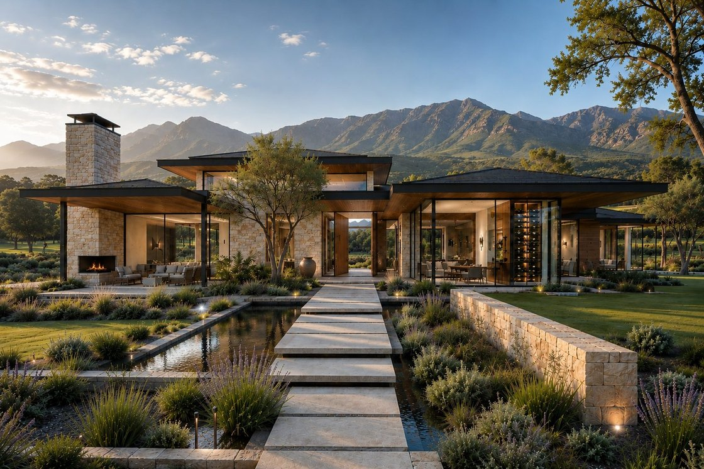
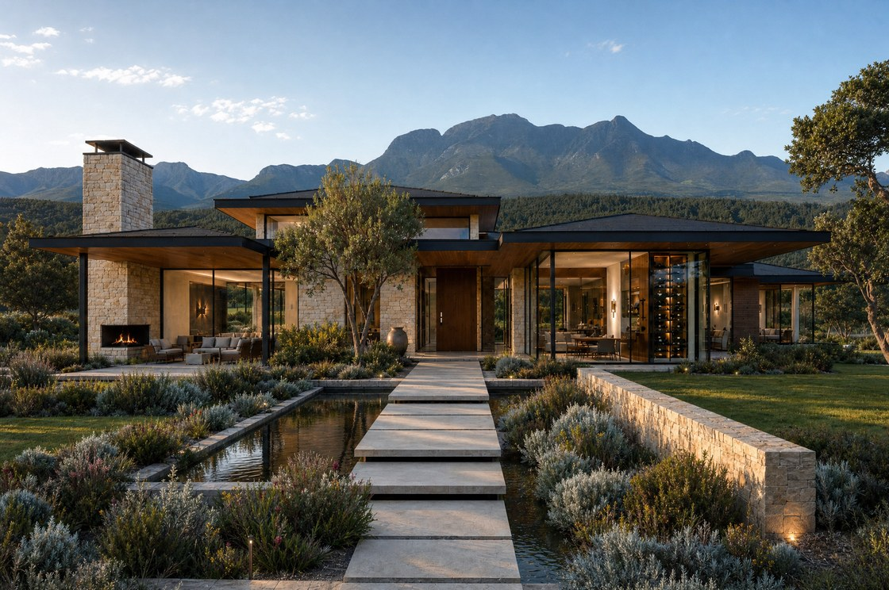

George Mountain Retreat


What changedThe lavender beds, oak trees and dry golden hills have gone. The range behind the house is now the Outeniquas as they actually stand above George: a long rugged ridgeline, green grass and fynbos on the lower slopes, a dark belt of forest at the foot, big open sky.
What stayedThe house, the water channel, the paving and the planting beds are exactly as you sent them. The sky is clearer than in your version, because that is how the range reads on an ordinary good day here.